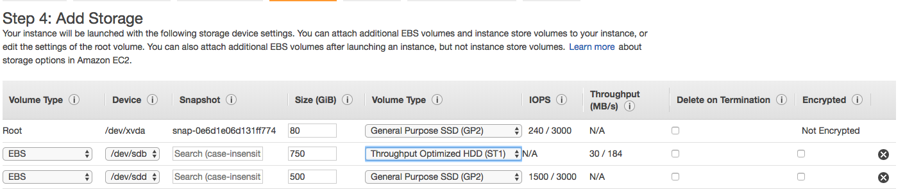
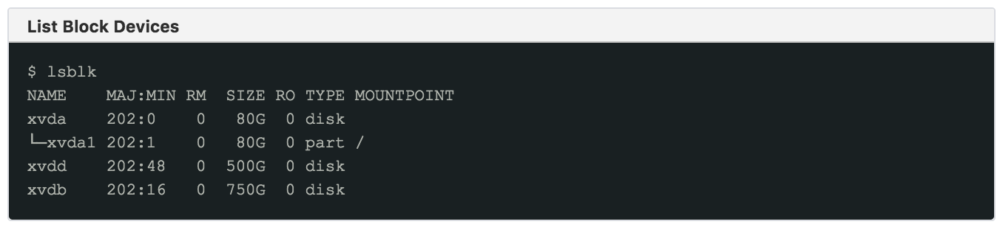
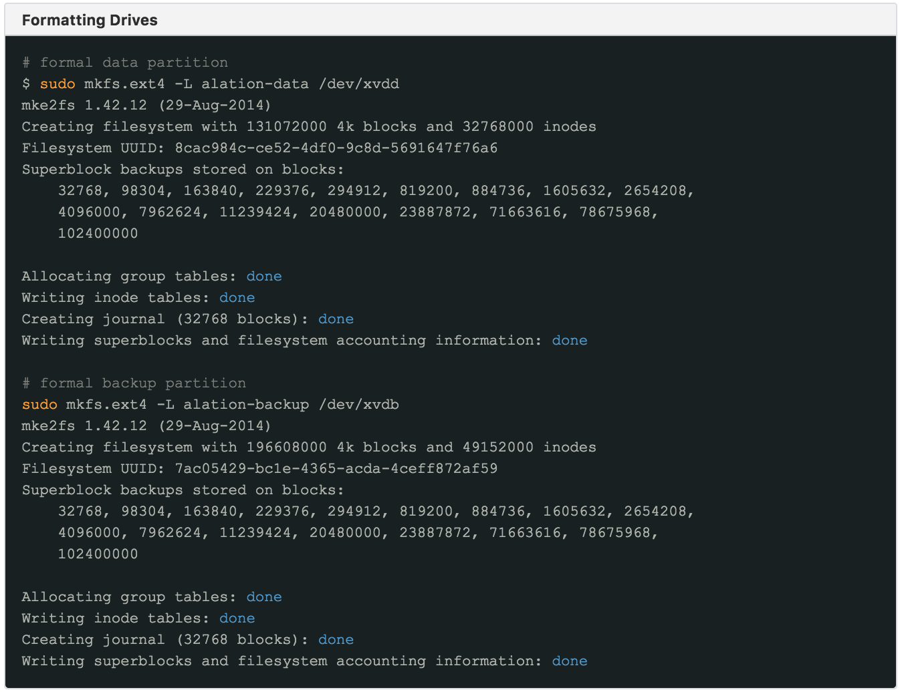
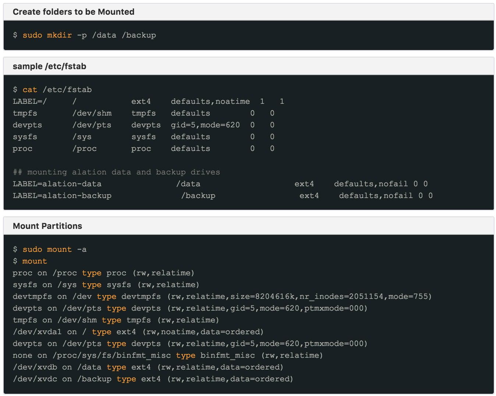
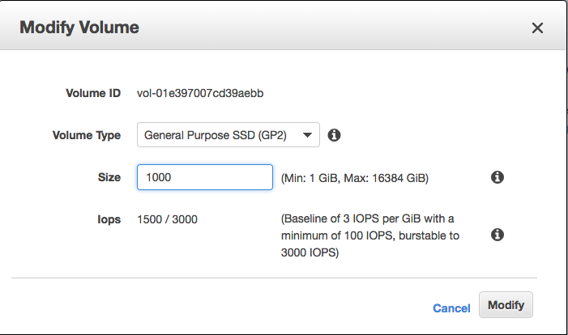
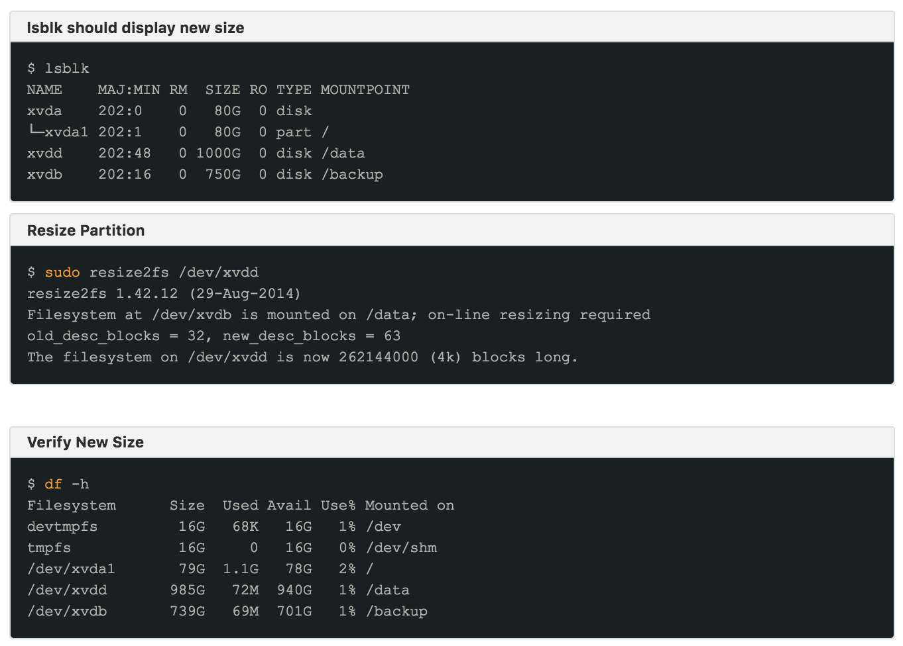
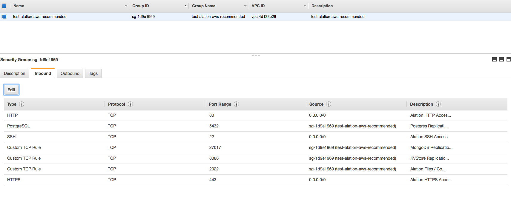

AWS Instance Preparation¶
Customer Managed Applies to customer-managed instances of Alation
This article provides recommendations on preparing an AWS Instance for installing Alation.
Recommended OS¶
OS |
Note |
|---|---|
AWS Linux |
AWS Linux is the optimal choice as it is a Red Hat derivative optimized to run workloads on AWS |
RHEL/CentOS |
Supported |
Ubuntu |
Supported |
EC2 Instance Sizing¶
For staging and development, an r4.xlarge instance can be used or any 4 core, 32 GB RAM system except Graviton Processor instance type
For Proof of Concept (POC) and production workloads, start with m4.xlarge instance
Use only EBS backed storage regardless of instance type
Use Termination Protection on production instances
Note
Depending on their workload, AWS instances can be sized up and down. The Instance Sizing table below is a recommendation. You can increase or decrease instance size as required. Also note that intense level of Query Log Ingestion (QLI) or Compose usage may require the instance be upgraded to the next tier.
Instance Sizing¶
Number of Users |
Workload |
Instance Type |
Instance Termination Protection |
|---|---|---|---|
0-25 |
production |
m4.xlarge |
Enabled |
25-50 |
production |
m4.2xlarge |
Enabled |
50-100 |
production |
m4.4xlarge |
Enabled |
100+ |
production |
m4.10xlarge |
Enabled |
0-10 |
staging / development |
r4.xlarge |
not applicable |
Disk Layout¶
Deselect Delete on Termination for all drives
Avoid using standard volumes because such storage profiles cannot not be resized
Alation recommends /data volume to be at least 500GB due to GP2 storage performance profiles
/backup partition should be at least 1.5 times larger than /data partition
Throughput Optimized (ST1) volume type can be used for /backup
Note that additional storage can be added later, as necessary
Disk Sizing¶
Partition |
Size (GiB) |
Type |
Device |
Notes |
|---|---|---|---|---|
root |
80 |
gp2 |
/dev/xvda |
Deselect Delete on Termination |
backup |
750+ |
st1 |
/dev/xvdb |
|
data |
500+ |
gp2 or io1 |
/dev/xvdd |
Sample Storage Setup
Formatting Drives¶
Use ext4 as file system format without partitions.
Do NOT use LVM for data volume
Do NOT create partition table. Format the whole block device (as this allows for adding more storage as needed, without downtime)
Add your partitions to /etc/fstab first
Format your drives with labels. Use labels or bulk id’s to mount.
Sample Setup
  Expanding Existing Storage¶
As your data continues to grow, you may need to expand your storage. If recommendations in this article were used to provision the host, storage can be easily expanded without the need to restart the server.
To expand the storage, locate your volume in the AWS console, right-click it and select Modify to open the Modify Volume dialog.
We recommend taking a snapshot of the volume prior to making any modifications.
Modify Volume
{kind=link}
You can use the lsblk command to verify that the storage has been extended.
Extending Storage
Security Group Recommendations (Inbound)¶
We recommend using the inbound firewall (AWS Security group).
Source addresses can be adjusted to be as strict as required by corporate policy
Use AWS method of referencing the security group within the security group for HA Pair. A security group can refer to itself which is an example below.
Security Group Recommendations¶
Type |
Protocol |
Port |
Source |
Description |
Required |
Notes |
|---|---|---|---|---|---|---|
HTTP |
TCP |
80 |
|
Allows HTTP Access |
Yes |
Main web services port |
HTTPS |
TCP |
443 |
|
Allows HTTPS Access |
Yes |
Secure web services port |
SSH |
TCP |
22 |
|
Allows SSH Access |
Optional |
Required for management of Alation by authorized users |
KVSTORE |
TCP |
8088 |
|
Allows kvstore replication |
Optional |
Only required for HA setup |
Replication Service |
TCP |
2022 |
|
Allows replication of files and configs |
Optional |
Only required for HA setup |
AWS Security Group
